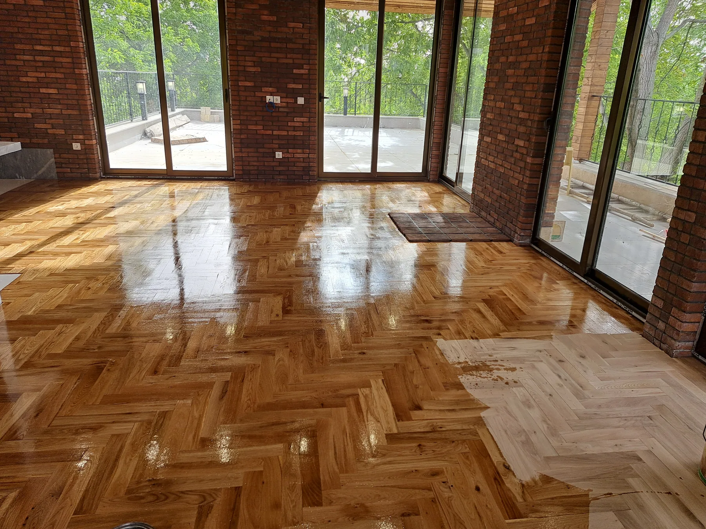

آقای پارکتاستودیو معماری شاهرخ خانلی
همه محصولات
NATURAL WOOD PARQUET
پارکت چوب طبیعی
مجموعهای منتخب از اجراهای واقعی پارکت چوب طبیعی؛ از الگوی جناغی و شطرنجی تا چیدمان شاخهای و کف سالنهای پرتردد.
۱۵ پروژه · ۷۰ تصویر منتخبSELECTED PROJECTS
پروژههای اجراشده
هر گروه شامل عکسهای مشابه از یک اجرای واحد است. برای دیدن گالری کامل روی کارت کلیک کنید.